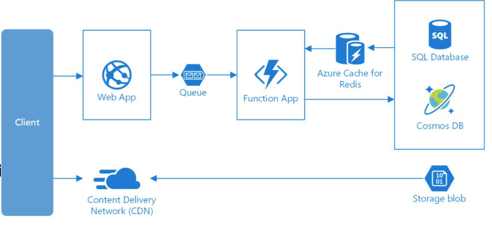

Networking
TCP/ICP
Stands for Transmission Control Protocol, a communications standard that enables application programs and computing devices to exchange messages over a network.
It is designed to send packets across the internet and ensure the successful delivery of data and messages over networks.
HTTP
The Hypertext Transfer Protocol (HTTP) is designed to enable communications between clients and servers.
HTTP works as a request-response protocol between a client and server.
Example:
A client (browser) sends an HTTP request to the server; then the server returns a response to the client.
The response contains status information about the request and may also contain the requested content.
POST is used to send data to a server to create/update a resource.
POST requests are never cached
POST requests do not remain in the browser history
POST requests cannot be bookmarked
POST requests have no restrictions on data length
GETis used to request data from a specified resource.GET requests can be cached
GET requests remain in the browser history
GET requests can be bookmarked
GET requests should never be used when dealing with sensitive data
GET requests have length restrictions
GET requests are only used to request data (not modify)
Polling
Short polling
Is the original polling protocol for clients to get regular information updates from a server. The steps of short polling are:
Client sends Server an HTTP request for new information.
Server responds with new information, or no information.
Client repeats the request at a set interval (e.g. 2s)
Advantages
The advantages of Short polling are that it’s very simple and widely supported because it’s part of the HTTP.
Disadvantages
The downside of short polling is that it has a lot of request overhead from both sides: the client has to constantly make new requests, and the server has to handle them whether or not there’s new information.
Notes
In practice if you want a polling connection, long polling is preferred to short polling.
Long Polling
Long polling is a more efficient version of short polling. The steps of long polling are:
Steps:
When a client requests the server for information, the server holds the connection open until there are new messages for the client or the connection times out.
When the server responds with the new messages, the connection ends. Once the connection ends, the client immediately initiates another request to the server for messages and the cycle repeats.
This approach lowers the latencies and resources involved in the pull approach (polling).
Benefits of long polling are that it’s part of the HTTP protocol, so it’s widely supported, and it produces less traffic than short polling because it takes fewer requests. In order to support this, the server-side implementation is slightly more complex than short polling, but not nearly as complex as the other two protocols we’ll look at:
WebsocketsandServer Sent Events.
Disadvantages
Drawbacks to long polling: In some implementations holding unfulfilled requests can take more server resources than short polling, and limit the overall number of possible connections.
Also if there are multiple open requests from the same client, message ordering can’t be guaranteed, and messages can get lost.
Server Sent Events
Server Sent Events provide a one-way connection for a server to push new data to a client, without reestablishing a connection every time.
For example a social media app could use SSE to push new posts to a user feed as soon as they’re available.
SSE connections follow the EventSource interface, which uses HTTP to make the underlying communications.
At a high level, the steps of SSE are:
Client creates a new EventSource object targeting the server
Server registers SSE connection
Server sends new data to the client
Client receives messages with EventSource handlers
Either side closes the connection
WebSockets
Is a two-way message passing protocol based on TCP (the protocol at Layer 4 of the OSI networking model). WebSockets are faster for data transmission than HTTP because it has less protocol overhead and operates at a lower level in the network stack.
At a high level, the steps of a websocket connection are:
Client and Server establish a connection over HTTP and then “upgraded” using the WebSockets handshake
WebSockets TCP messages are transmitted in both directions over port 443 (or 80 if it’s not TLS encrypted)
Either side closes the connection
Advantages
The main advantage of
WebSocketsis speed: the client and server don’t have to find and reestablish their connection with each other every time a message is sent. Once the WebSockets connection is established, data can flow immediately and securely in either direction.TCP ensures that the messages will always arrive in order.
Example
WebSockets are really useful in multiplayer online gaming, where the high-quality graphics of the world need to be transmitted to distributed users with real-time state updates and tight synchronization.
Overall, WebSockets are a good choice if you know you need a fast, high-quality, bi-directional connection.
Domain Name System (DNS)
DNS translates a domain name such as www.example.com to an IP address
DNS is hierarchical, with a few authoritative servers at the top level.
A router or ISP provides information about which DNS server(s) to contact when doing a lookup.
Services such as CloudFlare and Route 53 provide managed DNS services.
Disadvantages
A DNS server can introduce slight delays, but can be mitigated by caching.
DNS server management could be complex and is generally managed by governments and large companies.
DNS services have recently come under DDoS attack, which prevent users from accessing websites.
Content Delivery Networks
A content delivery network (
CDN) is a distributed network of servers that can efficiently deliver web content to users.CDNs’ store cached content on edge servers in point-of-presence (POP) locations that are close to end users, to minimize latency.
CDN’s are typically used to cache static content such as images, CSS, or HTML. (push or put).
A CDN’s mission is to virtually shorten that physical distance, the goal being to improve site rendering speed and performance.

Steps
A user (Alice) requests a file (also called an asset) by using a URL with a special domain name, such as
<endpoint name>.azureedge.net. This name can be an endpoint hostname or a custom domain.The DNS routes the request to the best performing POP location, which is usually the POP that is geographically closest to the user.
If no edge servers in the POP have the file in their cache, the POP requests the file from the origin server. The origin server can be a backend file store.
The origin server returns the file to an edge server in the POP.
An edge server in the POP caches the file and returns the file to the original requestor (Alice). The file remains cached on the edge server in the POP until the time-to-live (TTL) specified by its HTTP headers expires. If the origin server didn’t specify a TTL, the default TTL is seven days.
Additional users can then request the same file by using the same URL that Alice used, and can also be directed to the same POP.
If the TTL for the file hasn’t expired, the POP edge server returns the file directly from the cache.
This process results in a faster, more responsive user experience.
Disadvantages
CDN costs could be significant depending on traffic.
Content might be stale if it is updated before the TTL expires it.
CDNs require changing URLs for static content to point to the CDN.
Virtual Networks
VNet enables many types of Azure resources, such as Virtual Machines to securely communicate with each other, the internet, and on-premises networks.
Subnets
A subnet is a range of IP addresses in the virtual network. Y
You can divide a virtual network into multiple subnets for organization and security.
Network Security Groups:
NSGs and application security groups can contain multiple inbound and outbound security rules that enable you to filter traffic to and from resources by source and destination IP address, port, and protocol.
Each rule has properties of:
Protocol
Source and destination port ranges
Address prefixes
Direction of traffic
Priority
Access type
IP Addresses
IP stands for
Internet Protocolwhich is the set of rules governing the format of data sent via the internet or local network.IP addresses are the identifier that allows information to be sent between devices on a network.
There are two methods in which an IP address is given to a resource:
dynamicorstatic.Public IP addresses: Used to communicate inbound and outbound with the Internet and other resources not connected to a virtual network.
Private IP addresses - Used for communication within a virtual network, your on-premises network, and the Internet.